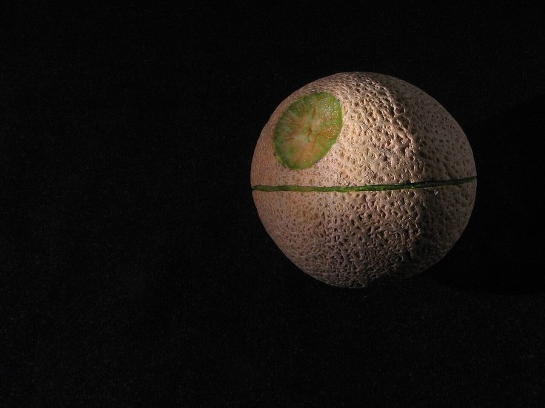

खरबूजाMuskmelon
Cucumis melo · Cucurbitaceae · FLR-0277

- Scientific name वैज्ञानिक नाम
- Cucumis melo L.
- Family कुल
- Cucurbitaceae
- Hindi हिंदी
- खरबूजा
- Local names स्थानीय नाम
- kharbuja, kharbooja, kharbuza, muskmelon
- Status here यहाँ की स्थिति
- cultivated
- Movement आवागमन
- Resident, here all year
- Known from कहाँ दर्ज
- Others have published records from the wider Awadh–Purvanchal plain, none yet from Basti–Ayodhya अवध–पूर्वांचल से दूसरों के प्रकाशित अभिलेख, बस्ती–अयोध्या से अभी नहीं
- IUCN IUCN
- not evaluated
- Review समीक्षा
- audited and independently read
When to look कब देखें
Expected mainly in April, May, June, July, August, September. मुख्यतः अप्रैल, मई, जून, जुलाई, अगस्त, सितंबर में अपेक्षित।
Uses and possibilities उपयोग और संभावनाएँ
Drawn from the documented uses in the profile below, where each is labelled traditional, current or a research lead. All uses →
Tell it apart from इनसे अलग पहचानें
खरबूजा / Muskmelon
Cucumis melo L. — Cucurbitaceae
खरबूजा — एक प्रसिद्ध ग्रीष्मकालीन फल की फसल है जो भारत भर में उगाई जाती है। यह एक विस्तृत बेल है जो जमीन पर फैलती है, 30–60 सेमी ऊँची होती है, और पत्तियाँ बड़ी, मोटी, खुरदुरी होती हैं। पीले फूल खिलते हैं जिन्हें मधुमक्खियाँ परागित करती हैं। फल गोल या अंडाकार होते हैं, 15–25 सेमी व्यास के, छिलका सफ़ेद या नारंगी जालीदार होता है। मांस मीठा, नारंगी-पीला, सुगंधित होता है। स्थानीय बाजारों में गर्मी के महीनों में खरबूजा बहुत लोकप्रिय है। बीजों को सुखाकर खाया जाता है।
Quick Identification त्वरित पहचान
| Feature | Description |
|---|---|
| Form | Trailing annual vine, 30–60 cm tall, with tendrils and densely hairy stems |
| Leaves | Alternate, deeply lobed or palmate, 10–20 cm diameter, coarse, hairy surface |
| Flowers | Unisexual; male and female flowers separate; yellow, 1–2 cm across, five petals |
| Fruit | Globose or ovoid, 15–25 cm diameter; rind netted or ribbed, yellow or orange; flesh sweet, orange-yellow |
| Seeds | Flattened, cream-white, 0.8–1.2 cm; numerous in fruit cavity; sweet-tasting when dried |
Field tip: A trailing vine with lobed leaves, yellow flowers, and round netted fruits with sweet orange flesh and numerous seeds; distinct musky aroma at maturity.
Morphology आकारिकी
| Feature | Measurement |
|---|---|
| Vine length | 1–3 m trailing |
| Leaf diameter | 10–20 cm |
| Flower diameter | 1–2 cm |
| Fruit diameter | 15–25 cm |
| Fruit weight | 0.5–2 kg |
| Seed length | 0.8–1.2 cm |
Root system: Taproot with extensive lateral roots in upper soil layer.
Pollination: Monoecious; male flowers open first; pollinated by bees and other insects.
Associated Species / Interactions सहजीवी संबंध
- Bee pollinator: Flowers are visited by honeybees and wild bees for pollen
- Insect host: Hosts various caterpillars and beetles
- Seed dispersal: Fruit attracts rodents and other animals
- Intercropping: Sometimes grown with legumes in crop rotation
Life Cycle / Phenology जीवन चक्र
- Sowing: Sown in April–June depending on monsoon and irrigation
- Germination: Emerges within 5–8 days with warmth and moisture
- Vegetative growth: Rapid growth of trailing vines in May–June; leaves expand quickly
- Flowering: Flowers open in May–July; male flowers precede female flowers
- Fruit development: Fruits develop rapidly after pollination; mature in 35–40 days
- Harvest: Mature fruits are picked in July–September when rind turns tan and fruit develops musky aroma
Pests and Diseases कीट और रोग
- Powdery mildew: Podosphaera xanthii causes white powder on leaves in dry conditions
- Downy mildew: Pseudoperonospora cubensis causes yellowing and premature leaf drop in wet seasons
- Fruit flies: Bactrocera species infest ripe fruits; larvae tunnel through flesh
- Anthracnose: Colletotrichum causes dark lesions on fruits and leaves
Agricultural / Human Relevance कृषि प्रासंगिकता
Summer fresh fruit and seed crop.
- Summer refreshment: Muskmelon is consumed fresh as a cooling fruit during hot months; cut into pieces and eaten with salt or lemon
- Nutritional value: Rich in vitamin A (beta-carotene), vitamin C, potassium, and fiber
- Seed use: Dried seeds are eaten as a nutritious snack; seeds are also ground into flour
- Cultivars: Varieties include Arka Madhura, Punjab Sunheri, and local landraces
- Commercial value: Muskmelon commands good prices in summer markets
Traditional and Ethnobotanical Use
- Summer cooler: Considered cooling and hydrating in summer; consumed to prevent heat-related illnesses
- Seed powder: Ground seeds mixed with jaggery are given as a cooling tonic
- Fruit carving: Rind is used for decorative carving in some regions
Cultivation Calendar
| Stage | Month(s) |
|---|---|
| Field preparation | March–April |
| Sowing | April–June |
| Germination and seedling growth | April–May |
| Vegetative growth and flowering | May–July |
| Fruit development | June–August |
| Harvest | July–September |
Expected Locally स्थानीय रूप से अपेक्षित
Not a field record. Written from published accounts for eastern Uttar Pradesh. No confirmed local sighting yet — if you have seen it, that is what the atlas needs.
अभी तक स्थानीय पुष्टि नहीं। यह विवरण प्रकाशित स्रोतों से है, किसी अवलोकन से नहीं।
Cucumis melo is expected as a summer cucurbit crop in Basti district. Look for it in fields and gardens from April through September, recognizable by trailing vines and netted round fruits. The first local record would be a photograph with date and location.
Distribution वितरण
Global range: Domesticated in the Mediterranean and Near East; now cultivated worldwide in warm regions.
In India: Grown throughout the Indo-Gangetic plain and warm regions during summer and monsoon.
In Uttar Pradesh: Cultivated in plain districts as a summer and monsoon vegetable crop.
In Basti district / eastern UP: Cultivated resident; grown in fields and home gardens during warm months.
Research Questions शोध प्रश्न
- How does irrigation frequency affect the sugar content and aroma of muskmelon fruits? / सिंचाई की बारंबारता से खरबूजे की मिठास और सुगंध में क्या अंतर आता है?
- Can children predict the ripeness of a muskmelon by listening to the sound when tapped or smelling the fruit?
- Which pollinators (honeybees vs. wild insects) are more efficient at visiting muskmelon flowers?
- How does the spacing between plants affect the number and size of fruits per plant?
- Do muskmelon seeds remain viable after drying and storage for a full year in traditional containers?
Similar Species मिलती-जुलती प्रजातियाँ
| Species | Key Difference | हिंदी | |
|---|---|---|---|
| Citrullus lanatus ([[watermelon\ | Watermelon]]) | Fruit is much larger (5–10 kg); rind is dark green with light stripes; flesh is red or yellow; less aromatic | तरबूज़ — बहुत बड़ा, लाल या पीला मांस |
| Cucumis sativus ([[cucumber\ | Cucumber]]) | Fruit is long and thin (20–30 cm); rind is dark green; flesh is white and watery; not sweet | खीरा — लंबा, हरा, बेस्वाद |
| Momordica charantia ([[bitter_gourd\ | Bitter Gourd]]) | Fruit is thin and warty; intensely bitter; leaves are deeply lobed; completely different flavor | करेला — पतला, तीखा, कड़वा |
Field rule: A trailing vine with deeply lobed leaves, yellow flowers, and round netted sweet fruits with orange flesh and musky aroma distinguishes muskmelon.
Taxonomy & Classification वर्गीकरण
Original description. Carl Linnaeus described Muskmelon as Cucumis melo in 1753 in Species Plantarum. The genus name Cucumis is the classical Latin name. The specific epithet melo is from the Greek melopepon.
Subspecies. Multiple subspecies and groups recognized based on fruit morphology; cultivation groups include reticulatus (netted), inodorus (non-aromatic), and cantalupensis (ribbed).
Family and order placement. Order Cucurbitales, family Cucurbitaceae (gourd/melon family).
Phylogenetic notes. Cucumis melo is likely derived from Cucumis melo subsp. agrestis, a wild species of the Mediterranean and Africa.
IUCN status rationale. Not evaluated. As a globally cultivated crop, it faces no conservation threats.
Photo Gallery फोटो गैलरी
No photos yet — add field photos to media/species/muskmelon/ and run node scripts/sync_photos.js.
References संदर्भ
- Linnaeus, C. (1753). Species Plantarum. Laurentii Salvii, Holmiae, Vol. 2, p. 1010. [original description]
- Indian Council of Agricultural Research (2021). Handbook of Vegetable Crops. ICAR, New Delhi.
- Directorate of Vegetable Research (2019). Package of Practices for Cucurbitaceous Vegetables. DVR, Varanasi.
- Pitrat, M., Hanelt, P. & Hammer, K. (2000). Some comments on infraspecific classification of cultivars of melon. Acta Horticulturae 510: 29–36.
- Botanical Survey of India (2015). State Flora Series: Flora of Uttar Pradesh. BSI, Kolkata.
- GBIF Occurrence Data — Cucumis melo, India (2024–2026).
Source file: species/flora/crops/muskmelon.md